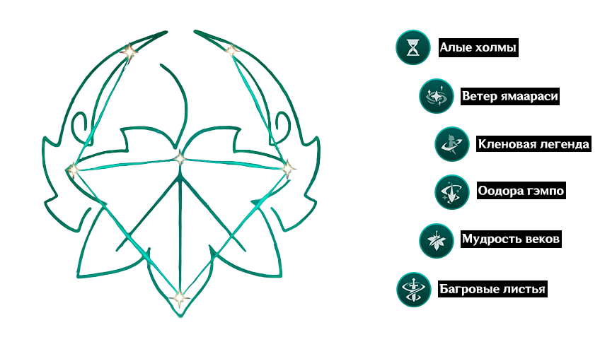

Описание персонажа
Странствующий самурай из Инадзумы, скромный и мягкий. За молодой и беззаботной внешностью скрывается полное невзгод прошлое. На первый взгляд беспечный юноша строго следует собственному кодексу поведения. Кадзуха живёт в странствиях, днём преодолевая путь, а ночью засыпая на земле под одеялом из неба и звёзд. Не влекут его ни богатство, ни слава. Для него важно только жить в гармонии с миром. Хоть он и часто ночует под открытым небом, будь то лето или зима, надвигающаяся непогода его вовсе не тревожит. Да и дождь с ветром словно избегают его и всегда обходят стороной. На вопрос о талантах Кадзуха отвечает честно: слушать ветер и наблюдать за облаками. Мало кто обращает внимание на мелкие изменения погоды, поэтому знаки природы часто остаются непонятыми. Но Кадзухе с его умением достаточно лишь почувствовать дуновение ветерка или выросшую влажность, чтобы понять: следует искать убежище. Обошедший полсвета Кадзуха избежал бессчётное количество ливней и снегопадов. Но на этот раз его ожидает невиданная гроза, уходить от которой он не станет. В судьбоносной встрече сойдутся дождь, молния и он. «...Издалека доносятся едва слышные раскаты грома. Даже если дождя не будет, я останусь здесь».
Созвездие
Лучший набор артефактов - «Изумрудная тень»
Можно выбить в подземелье "Долина воспоминаний"
2 предмета: Увеличение бонуса Анемо урона +15%
4 предмета: Урон от
статуса Рассеивание увеличивается на
60%. На 10 сек. снижает элементальное сопротивление
противника на 40% при взаимодействии Рассеивания с другим элементом.
Лучшее оружие - «Клятва свободы»
Песнь восстания. Часть Тысячелетней симфонии, что блуждает среди ветров. Увеличивает наносимый урон на 10%~20%. Вызов элементальной реакции даёт персонажу один Талисман воодушевления. Он может возникнуть раз в 0.5 сек., даже когда персонаж в отряде, но не активен. Два собранных Талисмана воодушевления пропадают, на 12 сек. наделяя ближайших членов отряда эффектом «Тысячелетняя симфония: Гимн восстания», который увеличивает урон обычной атаки, заряженной атаки и атаки в падении, на 16%~32%, а силу атаки — на 20%~40%. В течение 20 сек. после активации эффекта Талисманы воодушевления не будут появляться. Эффект Тысячелетней симфонии не складывается с другими эффектами, влияющими на те же навыки.